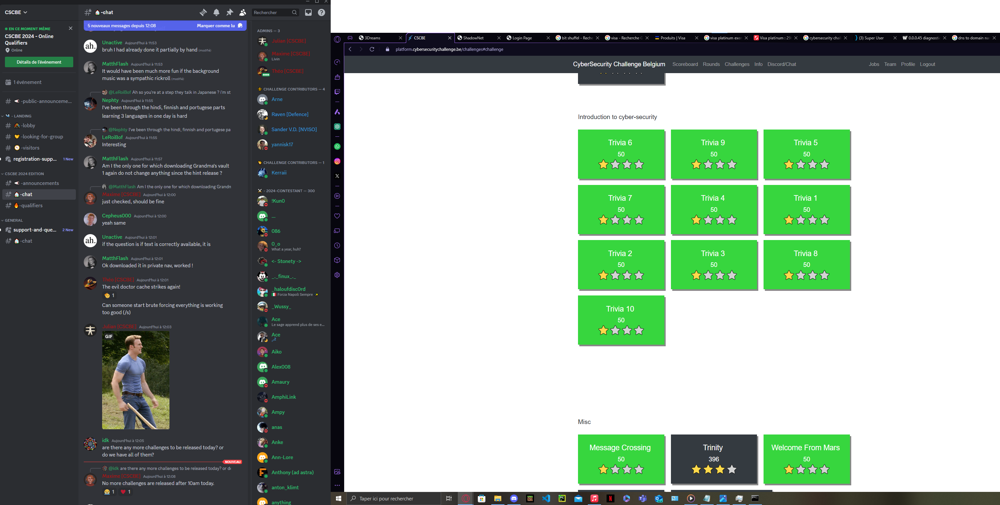
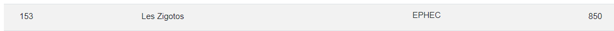
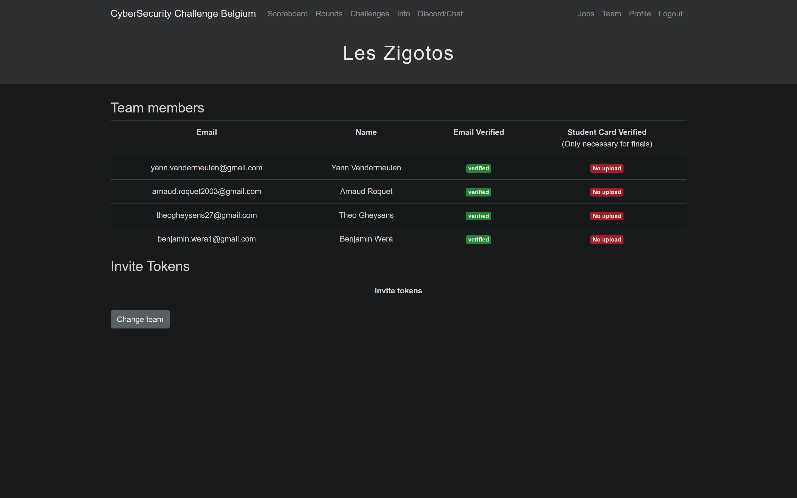

01
Cyber Security Challenge
Concours en ligne de hacking basique
Cadre.08/03/2024 - 9/03/2024
Après avoir eu la présentation du challenge à l'EPHEC, je me suis motivé avec une équipe d'autres étudiants pour réaliser ce concours.
Après avoir eu la présentation du challenge à l'EPHEC, je me suis motivé avec une équipe d'autres étudiants pour réaliser ce concours.
Analyse réflexive. J'ai beaucoup apprécié
ce challenge, il m'a permis de découvrir les bases du
hacking et de la cybersécurité. J'ai appris à mieux utiliser
des outils comme Wireshark que l'on avait déjà abordé
légèrement en cours. L'expérience a été très enrichissante,
devoir se débrouiller en peu de temps sans beaucoup
d'expérience en équipe demande de la coordination.
Heureusement les challenges étaient adaptés pour tous les
niveaux, ce qui nous a permis de bien se placer dans le
classement à la 156ème place. Même si nous n'avons pas
beaucoup dormi, j'en garde un très bon souvenir.


